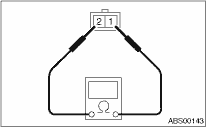
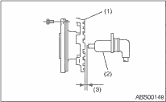
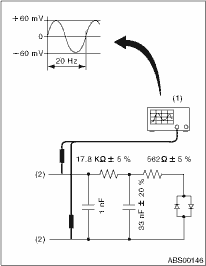

1. Check the pole piece of the ABS wheel speed sensor for foreign particles or damage. If necessary, clean the pole piece or replace the ABS wheel speed sensor.
2. Measure the ABS wheel speed sensor resistance.
If resistance is out of the standard value, replace with a new ABS wheel speed sensor.

|
Terminal No. |
Standard |
|
1 and 2 |
1.15±0.115 kΩ |
NOTE:
Check the ABS wheel speed sensor cable for discontinuity. If necessary, replace with a new part.
Check the gap between the tone wheel and the ABS wheel speed sensor around the entire circumference.
NOTE:
If clearance is narrow, adjust by using the spacer (Part No. 26755AA000).
If clearance is wide, check the output voltage and replace the ABS wheel speed sensor or tone wheel if the output voltage is out of the specification.
ABS wheel speed sensor gap standard value:
0.7 — 1.2 mm (0.028 — 0.047 in)

|
(1) |
Tone wheel |
|
(2) |
ABS wheel speed sensor |
|
(3) |
Sensor gap |
Output voltage can be checked by the following method. Install a resistor and condenser, then rotate the wheel about 2.75 km/h (2 MPH) or equivalent.
Standard value of output voltage:
0.12 to 1 V at (20 Hz)
NOTE:
Regarding terminal numbers, refer to 1. ABS WHEEL SPEED SENSOR. 

|
(1) |
Oscilloscope |
|
(2) |
Terminals |